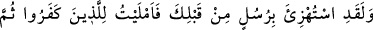
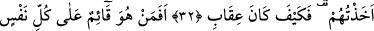
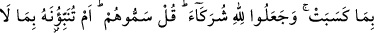
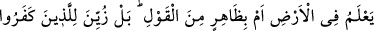
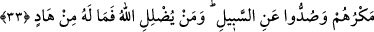
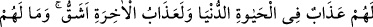
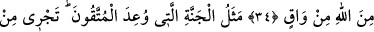
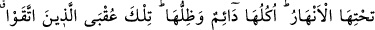
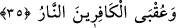

PEYGAMBERLERLE
ALAY EDENLER
32. Andolsun senden önceki peygamberlerle de alay edildi de ben inkâr edenlere
mühlet verdim, sonra da onları yakaladım. (Görseydin ki) azâbım nasılmış!
33. Herkesin kazandığını gözetleyip muhafaza eden, (hiç böyle yapamayan gibi
olur mu?). Onlar Allah’a ortaklar koştular. De ki: “Onlara ad verin (onlar
necidir?). Yoksa siz Allah’a yeryüzünde bilmediği bir şeyi mi haber veriyorsunuz?
Yahut boş laf mı ediyorsunuz?” Doğrusu inkâr edenlere hileleri süslü gösterildi ve
onlar doğru yoldan alıkonuldular. Allah kimi saptırırsa artık onu doğru yola iletecek
yoktur.
34. Dünya hayatında onlara sadece bir azap vardır. Âhiret azâbı ise daha
şiddetlidir. Onları Allah’tan (onun azâbından) koruyacak kimse de yoktur.
35. Takvâ sahiplerine vadedilen cennetin özelliği (şudur): Onun zemininden
ırmaklar akar. Yemişleri ve gölgesi süreklidir. İşte bu, takvâ sâhiplerinin sonudur.
Kâfirlerin sonu ise ateştir.
“Andolsun” kavmin seninle alay ettiği gibi “senden önceki peygamberlerle de alay
edildi.”
Peygamberler kelimesi, çok sayıda peygamber olduğunu göstermek için nekre
(belirsiz) kılınmıştır. Yani senden önceki peygamberlerin hepsiyle alay edilmişti,
denilmektedir. Şu âyet de buna delâlet eder: “Kendilerine gelen bütün peygamberlerle